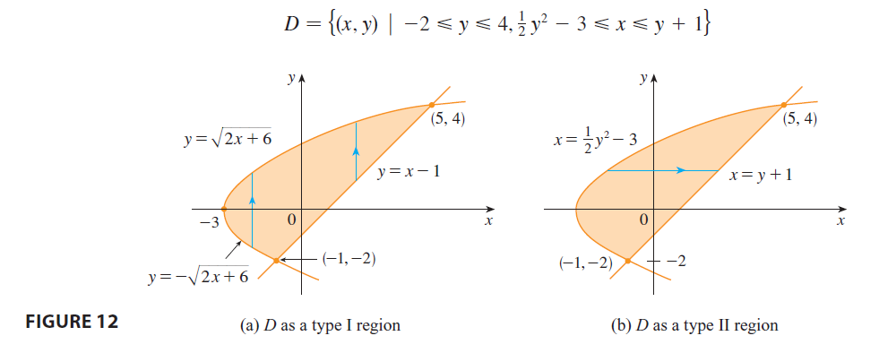

EXAMPLE 3 Evaluate \(\iint_D xy dA\), where \(D\) is the region bounded by the line \(y = x - 1\) and the parabola \(y^2 = 2x + 6\).

SOLUTION The region \(D\) is shown in Figure 12. Again \(D\) is both type I and type II, but the description of \(D\) as a type I region is more complicated because the lower boundary consists of two parts. Therefore we prefer to express \(D\) as a type II region: \[ D = \{(x, y) | -2 \le y \le 4, \frac{1}{2}y^2 - 3 \le x \le y + 1\} \] Then (5) gives \[ \iint_D xy dA = \int_{-2}^4 \int_{\frac{1}{2}y^2-3}^{y+1} xy dx dy = \int_{-2}^4 \left[ \frac{x^2}{2}y \right]_{x=\frac{1}{2}y^2-3}^{x=y+1} dy \] \[ = \frac{1}{2} \int_{-2}^4 y[(y+1)^2 - (\frac{1}{2}y^2-3)^2] dy = \frac{1}{2} \int_{-2}^4 y\left(y^2+2y+1 - (\frac{1}{4}y^4-3y^2+9)\right) dy \] \[ = \frac{1}{2} \int_{-2}^4 \left(-\frac{1}{4}y^5 + 4y^3 + 2y^2 - 8y\right) dy = \frac{1}{2} \left[ -\frac{y^6}{24} + y^4 + \frac{2y^3}{3} - 4y^2 \right]_{-2}^4 = 36 \] If we had expressed \(D\) as a type I region using Figure 12(a), then we would have obtained \[ \iint_D xy dA = \int_{-3}^{-1} \int_{-\sqrt{2x+6}}^{\sqrt{2x+6}} xy dy dx + \int_{-1}^5 \int_{x-1}^{\sqrt{2x+6}} xy dy dx \] but this would have involved more work than the other method.